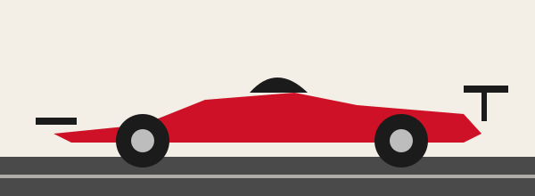

Bienvenido al Gran Premio más glamuroso
El Gran Premio de Mónaco es una de las carreras más famosas del calendario de la Fórmula 1. Se disputa en las calles del Principado, entre edificios, puerto y túneles, sin apenas margen de error. Este sitio resume su circuito, su historia y sus ganadores recientes.

Datos básicos de la carrera
| Circuito | Circuit de Monaco |
|---|---|
| Longitud | 3,337 km |
| Vueltas | 78 |
| Distancia de carrera | 260,286 km |
| Primera edición en el Mundial | 1950 |
¿Por qué es tan especial?
- Es un circuito urbano muy estrecho, donde adelantar es muy difícil.
- La clasificación del sábado pesa casi tanto como la propia carrera.
- Forma parte de la llamada Triple Corona del automovilismo.
- Tiene tramos míticos como el túnel y la horquilla del Grand Hôtel.
Las tres joyas de la Triple Corona
- Gran Premio de Mónaco
- 500 Millas de Indianápolis
- 24 Horas de Le Mans